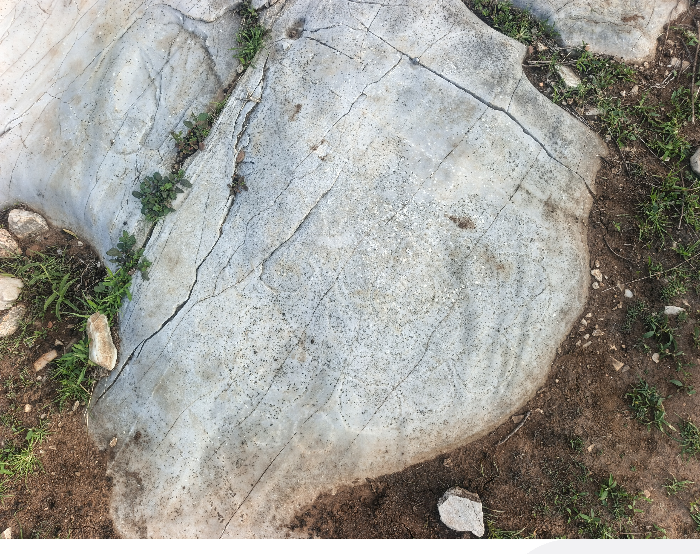

Dalle n°08
Fiche documentaire : photo de terrain, modèle 3D par photogrammétrie, imagerie RTI.
Photo de terrain

Modèle 3D — photogrammétrie
Imagerie RTI
Visualiseur RTI — Dalle n°08
Fiche documentaire : photo de terrain, modèle 3D par photogrammétrie, imagerie RTI.
Photo de terrain

Modèle 3D — photogrammétrie
Imagerie RTI